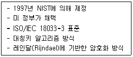
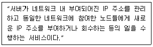
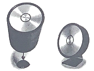
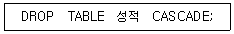

멀티미디어콘텐츠제작전문가 (2021-08-14 기출문제)
1과목: 멀티미디어개론
1. 미리 설계된 시간이나 임의 환경조건이 충족되면 스스로 모양을 변경 또는 제조하여 새로운 형태로 바뀌는 제품을 3D프린팅하는 기술은?
- 에그노스틱
- 4D 프린팅
- 민하드웨어
- 시멘틱
(정답률: 89%)

2. IP 헤더의 필드로 라우팅 도중에 데이터그램이 무한 루프에 들어가는 것을 방지하기 위해 인터넷에 머물 수 있는 최대 시간을 지정하는 필드는?
- IHL
- VER
- TTL
- FLAG
(정답률: 81%)
3. 블루레이(Blu-ray)에 대한 설명으로 틀린 것은?
- DVD보다 많은 용량의 데이터 저장
- 비디오 데이터 포맷은 MPEG-2 지원
- 오디오는 5.1채널의 AC-3 지원
- 120nm 파장의 녹색 레이저를 사용하여 데이터 기록
(정답률: 87%)
4. OSI-7 Layer에서 응용계층 프로토콜이 아닌 것은?
- ICMP
- FTP
- HTTP
- TELNET
(정답률: 66%)
5. 이메일(e-Mail)과 관련된 프로토콜로 적당하지 않는 것은?
- SMTP
- POP3
- TFTP
- IMAP
(정답률: 75%)
6. 스캐너(scanner)에 대한 설명으로 틀린 것은?
- 평판 스캐너는 필름입력에 적합한 장치이다.
- 전자출판과 같은 고급 인쇄를 위해서는 드럼 스캐너가 적합하다.
- 3패스 스캔은 1패스 스캔에 비해 오랜 시간이 걸린다.
- 일반적으로 스캐너는 SCSI방식 또는 USB인터페이스를 사용하여 연결한다.
(정답률: 68%)
7. 전송계층에서 데이터를 세그먼트 단위로 나누어 전송하고 오류 제어 및 흐름 제어를 제공하는 프로토콜은?
- TCP
- UDP
- ICMP
- SMTP
(정답률: 75%)
8. 운영체제의 성능 평가 요소로 거리가 먼 것은?
- 처리 능력
- 신뢰도
- 반환 시간
- 비용(요금지불)
(정답률: 90%)
9. 웹과 인터넷 등의 가상 세계가 현실 세계에 흡수된 형태로써, 대표적인 가상세계 서비스로 “세컨드 라이프(second life)” 등이 있으며, 기존의 가상현실(VR)보다 진보된 개념은?
- AaaS
- Grid
- Metaverse
- Splogger
(정답률: 93%)
10. 파일 압축 기법 중 손실 기법에 속하는 것으로 데이터의 의미나 특정 미디어의 특성이 반영되는 것을 소스 인코딩이라 한다. 다음 중 소스 인코딩에 속하는 방식이 아닌 것은?
- 다단계 코딩
- 변환 방식
- 허프만 코딩
- 벡터 양자화
(정답률: 57%)
11. 스튜디오 안의 연주음은 청중에서 들려오는 직접파와 벽을 통해 반사되는 반사파가 합쳐져 음의 크기가 점차 평형상태에 이르게 되고, 이후 갑자기 연주를 멈추면 반사파만 순간 남게 된다. 이때의 반사파를 무엇이라 하는가?
- 2차 순음
- 잔향
- 순간 측음
- 회절
(정답률: 89%)
12. OSI 계층모델에서 종착(End-Point) 간 전송메시지의 오류제어(Error Control)와 흐름제어(Flow Control)를 통해 데이터의 신뢰성을 보장하는 계층은?
- 물리계층
- 전송계층
- 응용계층
- 표현계층
(정답률: 75%)
13. 다음에 해당하는 암호화 기법은?

- AES
- RSA
- MD-5
- Diffie-Hellman
(정답률: 65%)
14. UNIX의 쉘(Shell)에 관한 설명으로 옳지 않은 것은?
- 명령어 해석기이다.
- 프로세스, 기억장치, 입출력 관리를 수행한다.
- 시스템과 사용자 간의 인터페이스를 담당한다.
- 여러 종류의 쉘이 있다.
(정답률: 61%)
15. 다음 중 포트스캔에 대한 설명으로 틀린 것은?
- 포트가 열려 있는 것을 확인하면 시스템의 활성화 정보도 얻을 수 있다.
- 열린 포트라 하더라도 아무 응답이 없는 경우가 있다.
- 컴퓨터에 존재하는 TCP/UDP 포트는 28개이다.
- 포트를 검색하기 위헤서는 먼저 IP를 알아야 한다.
(정답률: 63%)
16. 아날로그 음성 데이터를 디지털 형태로 변환하여 전송하고, 디지털 형태를 원래의 아날로그 음성 데이터로 복원시키는 것은?
- ROE
- CCU
- DFE
- CODEC
(정답률: 82%)
17. TCP의 연결과정에서 사용되는 “3-way handshake”의 취약점을 이용한 공격은?
- Storm
- SYN Flooding
- Multi-level Queue
- Exec
(정답률: 72%)
18. 운영체제로 거리가 먼 것은?
- Windows 10
- RADEON 5
- Linux
- OS/2
(정답률: 86%)
19. 멀티미디어 콘텐츠의 전자상거래(생성, 거래, 전달, 관리, 소비)를 위해 상호운용성을 보장하는 통합 멀티미디어 프레임워크를 위한 표준화에 해당하는 것은?
- MPEG-2
- MPEG-7
- MPEG-21
- MPEG-Z
(정답률: 74%)
20. 다음은 무엇에 대한 설명인가?

- POP
- DHCP
- S/MIME
- SMTP
(정답률: 67%)
2과목: 멀티미디어기획및디자인
21. 편집디지인의 디자인 요소가 아닌 것은?
- 트레이드오프
- 타이포그래피
- 일러스트레이션
- 레이아웃
(정답률: 76%)
22. 컴퓨터그래픽스에 대한 설명으로 틀린 것은?
- 여러 수작업의 도구들을 하나의 도구로 통합하였다.
- 빠르고 정확하게 작업할 수 있다.
- 작업의 능률성을 높일 수 있다.
- 자연적인 미나 기교를 완벽히 살릴 수 있다.
(정답률: 92%)
23. 무채색의 특징이 아닌 것은?
- 흰색에서 검정색까지의 채색이 없는 물체색이다.
- 색상과 채도가 없다.
- 명도의 차이가 없다.
- 전 영역의 파장을 고르게 반사하면 회색이 된다.
(정답률: 82%)
24. 디자인 요소들의 상태, 수행 가능한 동작, 이미 수행된 동작의 결과 등을 분명하게 표시함으로써 사용성을 개선하는 사용자 인터페이스 원칙은?
- 가시성
- 투명성
- 무결성
- 일관성
(정답률: 70%)
25. 색채 지각 반응 효과에서 명시성에 가장 크게 영향을 미치는 속성은?
- 명도
- 채도
- 색상
- 질감
(정답률: 78%)
26. 특정 대상인 기업, 회사, 단체, 제품, 행사 등을 특징 있게 나타낼 수 있는 시각적인 상징물은?
- 카툰(Cartoon)
- 캐릭터(Character)
- 캐리커쳐(Caricature)
- 컷(Cut)
(정답률: 86%)
27. 다음 중 가법혼색의 3원색이 아닌 것은?
- Yellow
- Red
- Green
- Blue
(정답률: 90%)
28. 2차원에서 모든 방향으로 펼쳐진 무한히 넓은 영역을 의미하며 형태를 생성하는 요소로서의 기능을 가진 것은?
- 점
- 선
- 면
- 입체
(정답률: 77%)
29. 인터페이스 디자인을 위한 조형 원리로 거리가 가장 먼 것은?
- 통일
- 조화
- 절제
- 균형
(정답률: 85%)
30. 그림에서 제시된 이미지의 형태에서 느껴지는 디자인의 원리는?

- 근접의 원리
- 착시의 원리
- 반복의 원리
- 대비의 원리
(정답률: 74%)
31. 오스트발트 색채조화론에 대한 설명으로 옳은 것은?
- 회전 혼색법을 사용하여 두 개 이상의 색을 배열하였을 때 그 결과가 명도5(N5)인 것이 가장 조화되고 안정적이다.
- 명도는 같으나 채도가 반대색일 경우 채도가 높은 색은 좁은 면적, 채도가 낮은 색은 넓은 면적일 때 조화롭다.
- 색표계의 3대 계열인 백색량, 흑색량, 순색량은 서로 조화를 이룬다.
- 미도 M과 먼셀 색체계를 모체로 하며, 감정적으로 다루어지던 통념을 배격하고 과학적이고 정량적인 방법의 색채조화론이다.
(정답률: 58%)
32. 제작하려는 콘텐츠의 사용자 요구의 수용, 제작목표의 반영 등이 적절히 이루어질 수 있는지 등 각종 기획방향을 의사결정권자에게 확인하는 절차는?
- 프레젠테이션
- 내용제작
- 정보디자인
- 인터렉션 디자인
(정답률: 87%)
33. 인터랙션 디자인의 제작 기획 단계에서 고려해야 할 요소가 아닌 것은?
- 메타포
- 탐색항해
- 스토리보드
- 프로그래밍
(정답률: 81%)
34. 벡터 그래픽스(Vector Graphics)에 대한 설명으로 틀린 것은?
- 벡터 데이터는 점을 이어 선을 만들거나 점들을 잇는 수학공식으로 형태를 만든다.
- 사진의 합성이나 수정뿐만 아니라 캔버스에 작업하듯이 이미지를 페인팅하는 작업들은 벡터 프로그램을 사용한다.
- 픽셀과는 달리 개별적으로 분리된 단위로 나누어지질 않는다.
- 벡터는 근본적으로 선 드로잉(Line Drawing)을 위해 사용된다.
(정답률: 67%)
35. 율동의 요소로 거리가 먼 것은?
- 점증
- 반복
- 변칙
- 대칭
(정답률: 62%)
36. 시나리오 구성 요소와 설명이 바르게 연결된 것은?
- 모티브(Motive) - 삽입장면
- 프롤로그(Prologue) - 영화의 본 내용 뒤에 보여지는 해설
- 내러티브(Narrative) - 스토리의 구성
- 내레이션(Narration) - 영화의 내용을 소개하는 도입부분
(정답률: 77%)
37. 타이포그래피(typography)에 대한 설명으로 틀린 것은?
- 글자라는 의미어 그리스어 typewriter에서 유래하였다.
- 글자를 이용한 디자인으로 예술과 기술이 합해진 영역이다.
- 글자체, 글자크기, 글자사이, 글줄사이, 여백 등을 조절하여 전체적으로 읽기에 편하도록 구성하는 표현 기술이다.
- 전통적으로 활판인쇄술을 의미했으나 현대에서는 기능과 미적인 면에서 효율적으로 운용하는 기술이나 학문으로 통용되고 있다.
(정답률: 70%)
38. TV의 영상화면이나 모자이크, 신인상파의 점표법에서 사용된 혼색법은?
- 병치혼합
- 계시혼합
- 감산혼합
- 회전혼합
(정답률: 69%)
39. 선(Line)에 대한 설명으로 틀린 것은?
- 기하직선형 : 질서가 있는 간결함, 확실, 명료, 강함, 신뢰, 안정된 느낌
- 자유직선형 : 강력, 예민, 직접적, 남성적, 명쾌, 대담, 활발한 느낌
- 수평선 : 상승의 순간성이 강한 운동력이 가해져 직접적이고 긴박한 느낌
- 자유곡선형 : 기하학적 곡선이 아니므로 조하가 잘되며 아름답고 매려적인 느낌
(정답률: 80%)
40. 게슈탈트의 심리법칙 중 거리가 가까운 요소끼리 하나의 묶음으로 보이는 원리는?
- 근접성의 원리
- 폐쇄성의 원리
- 유사성의 원리
- 연속성의 원리
(정답률: 74%)
3과목: 멀티미디어저작
41. HTML5 시맨틱(Semantic) 태그에 대한 설명으로 옳은 것은?
- <nav> 태그는 <header>나 <footer> 태그에 포함될 수 있다.
- <aside> 태그는 콘텐츠가 해당 페이지에서 삭제되면 메인 콘텐츠도 함께 삭제시키기 위해 사용된다.
- <section> 태그 안에서 또 다른 <section> 태그를 넣을 수 없다.
- <h1> ~ <h6> 태그는 6가지 데이터 전송 방식을 정의한다.
(정답률: 65%)
42. HTML5 CANVAS API 요소에 대한 설명으로 틀린 것은?(문제 오류로 가답안 발표시 1번으로 발표되었지만 확정답안 발표시 1, 4번이 정답처리 되었습니다. 여기서는 가답안인 1번을 누르시면 정답 처리 됩니다.)
- CANVAS 의 좌표계는 화면 좌측 하단이 (0,0)의 위치이다.
- CANVAS 의 좌표계는 오른쪽으로 갈수록 X좌표가 증가한다.
- CANVAS 는 선을 그리기 위해 stroke 함수를 호출할 수 있다.
- CANVAS 는 선을 그리기 위해 linTo 함수를 호출할 수 있다.
(정답률: 82%)
43. CSS의 선택자(Selector)와 관련한 설명으로 틀린 것은?
- 전체 선택자(Universal Selector)는 페이지에 있는 모든 요소를 대상으로 스타일을 적용할 때 사용된다.
- 클래스 선택자(Class Selector)는 같은 태그라도 특정 부분에만 다른 스타일을 적용할 때 사용된다.
- 그룹 선택자(Group Selector)는 여러 선택자에 동일 속성을 적용해야 할 경우 같은 스타일을 두 번 정의하지 않고 한 번에 묶어서 정의할 수 있다.
- 자식 선택자(Child Selector)는 자식 요소와 자식의 자식 요소까지 스타일이 적용된다.
(정답률: 64%)
44. HTML의 form 태그(Tag)와 관련한 설명으로 틀린 것은?
- 입력 양식을 만들 때 사용된다.
- action 속성은 입력 데이터의 전달 방식을 선택한다.
- POST 방식은 별도로 데이터를 전송하는 방식으로 데이터의 용량에 큰 제한이 없다.
- GET 방식은 주소에 데이터를 입력하여 전달하는 방식이다.
(정답률: 41%)
45. 관계형 모델 및 데이터베이스에 대한 설명으로 틀린 것은?
- 관계형 데이터베이스는 관계형 모델에 기반하여 데이터들 간의 관계를 나타내기 위해 테이블들의 집합을 사용한다.
- 관계형 데이터베이스의 논리적 구조는 트리(Tree) 형태이다.
- 관계형 모델은 레코드-기반 모델의 한 예로 볼 수 있다.
- 잘못된 스키마 설계 시 정보의 불필요한 중복 문제를 가진 스키마가 나타날 수 있다.
(정답률: 56%)
46. 데이터베이스의 관계 대수에서 순수 관계 연산자가 아닌 것은?
- SELECT
- JOIN
- UNION
- DIVISION
(정답률: 61%)
47. SQL 데이터 조작어(DML)에 해당되지 않는 것은?
- RESTRICT
- SELECT
- INSERT
- DELETE
(정답률: 61%)
48. CSS의 특징으로 옳은 것은?
- 텍스트 요소에 더욱 더 많은 글꼴을 추가하기 위한 목적으로 사용된다.
- 텍스트, 이미지, 테이블, 폼 요소 등 웹 문서에 포함된 요소들을 자유롭게 제어하여 웹 문서를 다양하게 표현할 수 있도록 도와준다.
- CSS는 Cascading Style Sheets의 약어로 멀티미디어 콘텐츠 제작 시 배경이미지의 화질, 디스플레이 해상도 등을 지정해준다.
- CSS는 모든 브라우저에 동일하게 적용된다.
(정답률: 68%)
49. 데이터베이스 관리 시스템(DBMS)의 구성요소 중 디시크에 저장되어 있는 사용자 데이터베이스 및 데이터 사전을 관리하고, 실제로 접근하는 역할을 담당하는 것은?
- 중간 데이터 관리자(Middle Data Manager)
- 질의 데이터 분석기(Query Data Analyzer)
- 응용 프로그래머(Application Programmer)
- 저장 데이터 관리자(Stored Data Manager)
(정답률: 67%)
50. SQL 데이터 정의어(DDL)에 해당되지 않는 것은?
- DROP
- CREATE
- ALTER
- UPDATE
(정답률: 56%)
51. HTML과 관련한 설명으로 틀린 것은?
- HTML5에서는 <!doctype html>로 문서 유형(Document Type)을 선언한다.
- <p> 태그는 텍스트 단락을 표시하는 태그이다.
- <meta> 태그의 charset 속성은 문서에서 사용할 언어를 지정하기 위해 사용된다.
- <html>와 </html>은 웹 문서의 시작과 끝을 알려준다.
(정답률: 67%)
52. 파일 관리 시스템에서 레크도에 해당하는 개념으로, 관계형 데이터 모델에서 릴레이션의 행을 의미하는 것은?
- 도메인
- 테이블
- 튜플
- 원자값
(정답률: 67%)
53. CSS의 텍스트 스타일과 관련한 설명으로 틀린 것은?(문제 오류로 가답안 발표시 3번으로 발표되었지만 확정답안 발표시 1, 3번이 정답처리 되었습니다. 여기서는 가답안인 3번을 누르시면 정답 처리 됩니다.)
- text-lign 속성은 문단의 텍스트 정렬 방법을 지정한다.
- direction 속성 값은 rtl로 할 경우 오른쪽에서 왼쪽으로 텍스트를 표시한다.
- text-overflow 속성 값을 clip으로 할 경우 넘치는 텍스트를 말줄임표(“…”)로 표시한다.
- text-shadow 속성은 텍스트에 그림자 효과를 추가할 때 사용된다.
(정답률: 84%)
54. 데이터베이스를 쉽게 이해하고 이용할 수 있도록 관점에 따라 3단계 구조로 나눌 때 이에 포함되지 않는 단계는?
- 외부 단계(External Level)
- 개념 단계(Conceptual Level)
- 내부 단계(Internal Level)
- 저장 단계(Saving Level)
(정답률: 74%)
55. HTML에서 select 태그를 이용하여 여러 목록 중 다중 선택이 가능하도록 구성할 때 필요한 속성은?
- checked
- disabled
- onchange
- multiple
(정답률: 86%)
56. DBMS을 통해 사용할 수 있는 데이터 언어 중 불법적인 사용자로부터 데이터를 보호하기 위한 데이터 보안, 시스템 장애에 대비한 회복을 제어하는 명령어는?
- 데이터 정의어(DDL)
- 데이터 제어어(DCL)
- 데이터 조작어(DML)
- 데이터 부속어(DSL)
(정답률: 70%)
57. HTML5의 콘텐츠 타입 중 문서의 표현이나 성격을 규정하는 요소로 보통 head 영역에 위치하는 것은?
- Flow
- Embedded
- Phrasing
- Metadata
(정답률: 66%)
58. 다음 SQL문이 의미하는 것은?

- 성적 테이블만 삭제된다.
- 성적 테이블을 참조하는 테이블과 성적 테이블을 삭제한다.
- 성적 테이블이 참조중이면 삭제하지 않는다.
- 성적 테이블을 삭제할 지의 여부를 사용자에게 다의 질의한다.
(정답률: 76%)
59. HTML 파일에서 특수문자 < 가 브라우저에 출력되는 기호로 맞는 것은?
- >
- <
- =
- &&
(정답률: 77%)
60. SQL 명령어에 대한 설명이 옳은 것은?
- DELETE : 테이블을 삭제하는 명령이다.
- DROP : 테이블의 튜플을 삭제하는 명령이다.
- SELECT : 테이블에서 조건에 맞는 행과 열을 검색하는 명령이다.
- JOIN : 조건에 맞는 행과 열을 추가하는 명령이다.
(정답률: 63%)
4과목: 멀티미디어제작기술
61. 그래픽 태블릿(Graphic Tablet)의 설명으로 옳은 것은?
- 손으로 쓴 글씨 입력에는 불편한 점이 있다.
- 정확한 위치정보의 입력이 불가능하다.
- 섬세한 그림제작에 불편한 점이 있다.
- 평판 태블릿, 마우스와 스타일러스로 구성된다.
(정답률: 81%)
62. 멀티미디어 화면출력 처리 방식과 해상도가 바르게 짝지어진 것은?
- VGA : 800×600
- SVGA : 1280×800
- K-UHD : 7680×4320
- FHD : 1920×1080
(정답률: 78%)
63. 사운드 파형을 그대로 표현하는 웨이브(wave) 방식을 사용하는 파일 종류로 거리가 먼 것은?
- AU
- MOD
- WAV
- ALFF
(정답률: 73%)
64. 실사 촬영한 영상 시퀀스를 배경으로 하여 그 위에 컴퓨터에서 만들어진 모델을 정렬시켜 애니메이션 동작을 얻어내는 것은?
- 리깅(rigging)
- 로토스코핑(rotoscoping)
- 인 비트윈(in between)
- 플레이 백(play back)
(정답률: 71%)
65. 형태의 움직임이나 모양의 특성을 강조하여 제작한 애니메이션의 파일 저장 형식이 아닌 것은?
- Index
- FLC
- SWF
- FLA
(정답률: 71%)
66. 다음 중 장면전환의 기법이 아닌 것은?
- 틸트(Tilt)
- 오버랩(Overlap)
- 와이프(wipe)
- 컷(Cut)
(정답률: 66%)
67. 3차원 애니메이션의 모델링 중에서 물체의 골격만을 표현한 방법은?
- 와이어프레임 모델링(Wireframe Modeling)
- 솔리드 모델링(Solid Modeling)
- 쉐이딩 모델링(Shading Modeling)
- 텍스쳐 매핑 모델링(Texture Mapping Modeling)
(정답률: 77%)
68. 연주소의 부조정실에서 하는 역할과 거리가 먼 것은?
- 뉴스센터, 편집실 등 설비에서 넘겨받는 영상, 음성 신호 자료를 송신소로 송출한다.
- 드라마 등 각종 TV 프로그램을 녹화한다.
- 다양한 영상, 조명, 음향 등의 장비가 설치되어 있다.
- 카메라, 조명, 영상, 무대를 책임지는 프로듀서, 기술감독 등이 근무하고 있다.
(정답률: 55%)
69. 비트맵 방식과 베터 방식으로 구분되는 멀티미디어 구성요소는?
- 텍스트
- 이미지
- 사운드
- 비디오
(정답률: 84%)
70. 광 파장의 차이에 의한 색책감각을 나타내는 것으로 색의 종류를 표시하는 것은?
- 색상
- 명도
- 채도
- 포화도
(정답률: 77%)
71. 2D 애니메이션 기법에 속하지 않는 애니메이션은?
- 셀 애니메이션
- 오브제 애니메이션
- 컷아웃 애니메이션
- 페이퍼 애니메이션
(정답률: 79%)
72. 버즈아이 뷰 앵글에 대한 설명으로 맞는 것은?
- 새의 눈으로 본 각도에서 촬영하는 기법이다.
- 인물 촬영에 있어 가장 기본적이고 안정된 촬영기법이다.
- 피사체의 눈높이에서 촬영하는 기법이다.
- 지평선을 기준으로 기울어져 있는 상태로 불안한 느낌을 조성하는 촬영기법이다.
(정답률: 79%)
73. 정지 사진이나 한 장의 그림에 해당되는 영상의 시간적 최소 단위는?
- Cut
- Shot
- Frame
- Scene
(정답률: 85%)
74. 음향 신호의 변환 시 아날로그방식과 디지털방식의 특징으로 틀린 것은?
- 아날로그 신호는 전기회로의 구성이 복잡하다.
- 디지털 신호는 아날로그방식에 비해 신호처리 속도가 빠르다.
- 아날로그 신호는 잡음에 의해 신호가 변할 수 있다.
- 디지털 신호는 정보의 조작이 비교적 쉽다.
(정답률: 54%)
75. 수학적 알고리즘을 이용해 각 화소를 팔레트가 제공하는 컬러 가운데 가장 가까운 것으로 매칭시키는 것은?
- 디더링(dithering)
- 샘플링(sampling)
- 렌더링(rendering)
- 모델링(modeling)
(정답률: 69%)
76. NURBS sphere의 선택된 구성요소 중 UV 선상의 CV의 외곽을 한꺼번에 조절할 수 있는 구성요소는?
- Hull
- Isoparm
- Edit point
- Control Vertex
(정답률: 55%)
77. FM라디오방송에서 75[μs]의 시정수를 사용하여 음성 대역의 고역 부분의 레벨이 강조되도록 하여 S/N비를 향상시키는 회로는?
- 매트릭스 회로
- 펄스 회로
- 디엠파시스 회로
- 프리엠파시스 회로
(정답률: 49%)
78. 디지털 비디오나 오디오의 데이터를 압축 또는 해제하는 알고리즘을 총칭하는 것은?
- 코드분할(CDMA)
- 코덱(CODEC)
- 합성(Compositing)
- 편집(Editing)
(정답률: 83%)
79. 음의 성질을 표시하는 음의 3요소가 아닌 것은?
- 음원
- 주파수
- 진폭
- 음색
(정답률: 65%)
80. 음향 신호를 전송하거나 녹음할 때 최강음과 최약음의 비를 [dB]로 나타낸 것은?(문제 오류로 가답안 발표시 4번으로 발표되었지만 확정답안 발표시 모두 정답처리 되었습니다. 여기서는 가답안인 4번을 누르면 정답 처리 됩니다.)
- 이퀄라이저
- S/N 비
- SPL
- 정재파 비
(정답률: 74%)